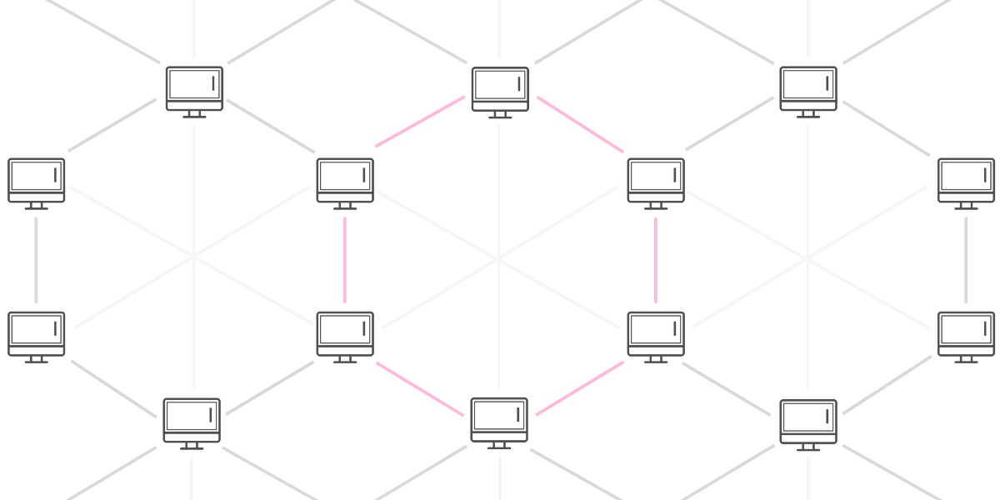

Blockchain Explained!
+ how it relates to Bitcoin. Written from a completely non-technical perspective.
Defining Blockchain
The term blockchain refers to the fact that it is a ‘chain’ of ‘blocks’. A ‘chain’ because everything is recorded in chronological order. And ‘blocks’ because the transactions are added to the chain in groups rather than individually.
Breaking it down
The term blockchain refers to the fact that it is a ‘chain’ of ‘blocks’. A ‘chain’ because everything is recorded in chronological order. And ‘blocks’ because the transactions are added to the chain in groups rather than individually.
‘Block’
Each block records a number of transactions, similar to a page in a record-keeping book. The amount of transactions on a block varies from blockchain to blockchain. For example, each block on the Bitcoin blockchain holds up to 1 megabyte of information.
‘Chain’
These transactions are recorded in the form of hashes — strings of numbers and letters. The hash of each transaction is generated to include information from the current and past transactions. This creates a chain effect where the order of hashes cannot be changed. As a result, transactions are immutable once they’ve been added.
All transactions need to be verified before they are added onto the blockchain. This is done through a consensus mechanism, which allows all the nodes on the network to agree on things without an authority. This is how blockchains stay autonomous and decentralized.